Tk にはいろいろなウィジェットが用意されていますが、場合によっては、ウィジェットの機能を無効にしたいことがあります。たとえば、ボタンやメニューに割り当てた機能が動作しない場合、ボタンやメニューの選択を無効にしなければいけませんが、そのことをユーザーに知らせた方が使いやすいアプリケーションになります。この場合、ウィジェットの状態を制御する -state オプションを使うと便利です。-state の値を表に示します。
| normal | 通常の状態 |
| active | アクティブな状態 |
| disabled | 無効な状態 |
ボタンなどのウィジェットでは、その上にマウスカーソルがくるとアクティブな状態になります。Tk では、ウィジェットがアクティブな状態になったときに、そのウィジェットを強調表示することができます。そのことで、マウスボタンを押したときに何か処理が行われることを表すことができます。
-state に disabled を設定すると、そのウィジェットは無効な状態になります。ボタンウィジェットであれば、ラベルの色が変わりマウスでボタンをクリックしても押すことができなくなります。テキストの色はオプションで指定することができます。
| -activeforeground | アクティブ時の色を指定 |
| -activebackground | アクティブ時の背景色を指定 |
| -disabledforeground | 無効時の色を指定 |
無効時の背景色は通常の背景色と同じになります。
それでは簡単な例を示しましょう。ラジオボタンを使ってボタンの状態を設定します。
リスト : ボタンの状態を変更する
use Tk;
$var = 'normal';
# ボタンの状態を変更
sub change_state {
$button->configure( -state => $var );
}
# メインウィドウ
$top = MainWindow->new();
$top->optionAdd( '*font' => 'FixedSys 14' );
# ボタンの設定
$button = $top->Button( -text => 'button',
-activeforeground => 'green',
-disabledforeground => 'red' )->pack( -fill => 'x' );
# ラジオボタンの設定
foreach $i ( 'normal', 'active', 'disabled' ){
$top->Radiobutton( -text => $i, -value => $i, -variable => \$var,
-command => \&change_state )->pack( -anchor => 'w' );
}
MainLoop();
ラジオボタンで選択した値はグローバル変数 $var に格納し、関数 change_state でボタンの状態を変更します。変数 $var は、あらかじめ normal に初期化しておきます。change_state では、ウィジェットコマンド configure を使って -state に変数 var の値をセットするだけです。これでボタンの状態を変更することができます。
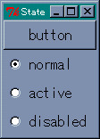 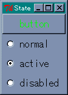 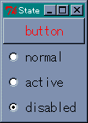 ボタンの状態を変更
次はメニューの状態を変更してみましょう。一般に、メニューには複数の項目を登録しますが、それらの項目に対してオプションを設定することができます。Tk の場合、メニュー項目を操作するために複数のメソッドが用意されていて、メニュー項目のオプションは entryconfigure メソッドで設定することができます。
ところが Perl/Tk の entryconfigure は、使い方がよくわかりません。いろいろ試してみたのですが、Perl/Tk では Tcl/Tk のように動いてくれませんでした。使い方をご存知の方は教えてくださいませ。Tcl/Tk の entryconfigure は、Tcl/Tk 応用編の ウィジェットの状態 をご覧ください。
そこで、別の方法を使います。Perl/Tk では、メニュー項目を生成したときに、それに対応するオブジェクトを返します。たとえば、メニュー項目でチェックボタンを作るには checkbutton メソッドを呼び出しますが、その返り値はチェックボタンに対応するオブジェクトです。ウィジェットのオプションを設定するメソッドに configure がありますが、これはどのウィジェットでも共通に使えるメソッドです。ようするに、メニューオブジェクトの configure メソッドを呼び出せば、そのメニューのオプションを設定することができるのです。
それでは configure メソッドを使って、メニューの状態を変更してみましょう。プログラムは次のようになります。
リスト : メニューの状態を変更する
use Tk;
# グローバル変数
@state = ('normal', 'normal', 'normal');
# メニューの状態を変更
sub change_state {
my $i = shift;
$menu_table[$i]->configure( -state => $state[$i] );
}
# メインウィンドウ
$top = MainWindow->new();
$top->optionAdd( '*font' => 'FixedSys 14' );
# メニューの設定
$m = $top->Menu( -type => 'menubar' );
$top->configure( -menu => $m );
$m1 = $m->cascade( -label => 'Menu', -under => 0, -tearoff => 0 );
foreach $i (0 .. 2) {
$menu_table[$i] = $m1->command( -label => "Menu$i", -command => sub { } );
}
# チェックボタンの設定
foreach $i (0 .. 2){
$top->Checkbutton( -text => "Menu$i disabled", -variable => \$state[$i],
-onvalue => 'disabled', -offvalue => 'normal',
-command => [\&change_state, $i] )->pack( -anchor => 'e' );
}
MainLoop();
メニューのオブジェクトは配列 @menu_table に格納し、チェックボタンが選択されたら、関数 change_state でメニューの状態を変更します。チェックボタンではオン・オフの値を disabled と normal に設定し、その値は配列 @state に格納します。メニューも色を指定することができますが、無効時の色を指定する -disabledforeground は用意されていません。メニューの状態を disabled に設定すると、その Menu が灰色に表示され選択することができなくなります。
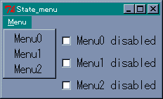 通常のメニューもうひとつ便利なオプションを紹介しましょう。マウスカーソルの形状は -cursor オプションで変更することができます。たとえば、待ち状態を表すカーソルに変更するには、次のように指定します。
$top->configure( -cursor => 'wait' );
メインウィンドウのマウスカーソルを wait に変更します。空文字列を設定すると、デフォルトのマウスカーソルに戻ります。また、-cursor はウィジェットごとに設定することができます。Tk で使用できるカーソル名は、Tk のソースファイル cursorfont.h に記述されています。これらのカーソルを表示するプログラムを次に示します。
リスト : カーソルを表示する
use Tk;
# カーソル名
@cursor1 = qw(
X_cursor arrow based_arrow_down based_arrow_up boat bogosity bottom_left_corner
bottom_right_corner bottom_side bottom_tee box_spiral center_ptr circle clock
coffee_mug cross cross_reverse crosshair diamond_cross dot dotbox double_arrow
draft_large draft_small draped_box exchange fleur gobbler gumby hand1 hand2
heart icon iron_cross left_ptr left_side left_tee leftbutton ll_angle lr_angle
man middlebutton mouse pencil pirate plus question_arrow right_ptr right_side
right_tee rightbutton rtl_logo sailboat sb_down_arrow sb_h_double_arrow
sb_left_arrow sb_right_arrow sb_up_arrow sb_v_double_arrow shuttle sizing spider
spraycan star target tcross top_left_arrow top_left_corner top_right_corner
top_side top_tee trek ul_angle umbrella ur_angle watch xterm
);
# メインウィンドウ
$top = MainWindow->new();
$top->optionAdd( '*font' => 'FixedSys 14' );
# ラベルの設定
$c = 0;
for( $x = 0; $x < 6; $x++ ){
$f = $top->Frame;
for( $y = 0; $y < 13; $y++ ){
$n = $cursor1[$c++];
$f->Label( -text => $n, -cursor => $n )->pack( -fill => 'x' );
}
$f->pack( -side => 'left', -fill => 'x' );
}
MainLoop();
ラベルごとに -cursor を設定します。マウスカーソルがラベル上にくると、そのラベルに設定した形状に変化します。いろいろなマウスカーソルが用意されているので、実際に試してみると面白いですよ。
このほかに、Windows で使用できるカーソル名には次のものがあります。
starting, ibeam, no, uparrow, wait, size_ne_sw, size_ns, size_nw_se, size_we
別名でもカーソルの形状はほとんど同じという場合もありますので、実際に試してみてください。
今回はウィンドウの大きさを変更してみましょう。もちろん、Tk はデフォルトでウィンドウのリサイズに対応しています。いままでのサンプルプログラムでも、マウスでウィンドウの大きさを変更することができます。ただし、ウィジェットの大きさは変化しません。ウィンドウを小さくしたらウィジェットが表示されなくなった、ということも起こります。まあ、これはウィンドウの大きさを制限することで回避することができます。ですが、アプリケーションによっては、ウィンドウのリサイズに合わせてウィジェットの大きさを変更した方がよい場合もあるでしょう。
ところで、ウィジェットのリサイズは面倒だな、と思われた方はいませんか。まじめに考えると、ウィンドウのサイズからウィジェットのサイズを計算して、大きさを変更する処理が必要になるのですが、Tk ではそんな難しいことをする必要はありません。ジオメトリマネージャーに用意されているオプションを設定するだけで、ウィンドウのサイズに合わせてウィジェットの大きさを変更することができます。Packer を使う場合は、次のオプションを設定します。
余白をウィジェットに割り当てただけでは、ウィジェットは大きくなりません。ウィジェットを引き伸ばすための -fill オプションを設定してください。それでは簡単な例を示しましょう。次のプログラムを見てください。
リスト : Packer のリサイズ use Tk; $top = MainWindow->new(); $top->Button( -text => 'button 0' )->pack( -expand => 1, -fill => 'both' ); $top->Button( -text => 'button 1' )->pack( -expand => 1, -fill => 'both' ); MainLoop();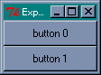 Packer によるボタンの配置
ウィンドウ全体に 2 つのボタンが表示されます。マウスでウィンドウの大きさを変えてみてください。ウィンドウに合わせてボタンの大きさも変化します。このように、Tk ではオプションを設定するだけで、ウィンドウのリサイズにも簡単に対応することができるのです。
ウィジェットを配置する順番も大切です。Packer はウィンドウが小さくなるとウィジェットを圧縮しますが、本当にスペースが無くなるとウィジェットは表示されなくなります。このとき、配置された逆順でウィジェットが削除されます。つまり、最初に配置されたウィジェットが最後まで残るのです。大切なウィジェットは最初に配置した方がいいでしょう。
Gridder のリサイズは、マスの状態を設定するメソッド gridColumnconfigure と gridRowconfigure で行います。
$window->gridColumnconfigure( column, options ); $window->Rowconfigure( row, options );
| -minsize | 最小の幅/高さを数値で指定する |
| -weight | 余白を配分するときの割合を数値で指定する |
| -pad | 詰め物を数値で指定する |
リサイズに対応するには、オプション -weight に 1 以上の整数値を指定します。簡単な使用例を示しましょう。ボタンを 4 つ Gridder で配置します。
リスト : Gridder のリサイズ
use Tk;
$top = MainWindow->new();
@column_data = (0, 0, 1, 1);
@row_data = (0, 1, 0, 1);
foreach $i (0 .. 3) {
$top->Button( -text => "button $i" )
->grid( -column => $column_data[$i], -row => $row_data[$i], -sticky => 'nsew');
}
MainLoop();
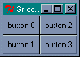 Gridder によるボタンの配置
gridColumnconfigure は縦方向に配置されたマスのオプションを設定します。次のように、0 列に -weight => 1 を設定します。
$top->gridColumnconfigure( 0, -weight => 1 );
ボタンはメインウィンドウに配置されているので、gridColumnconfigure はメインウィンドウのオブジェクト $top のメソッドとして呼び出します。これで、ウィンドウが横に大きくなると、0 列に配置されたボタン button 0 と button 1 も横に大きくなります。
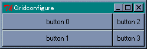 button 0, 1 は横方向に伸びる1 列目は -weight オプションを設定していないので、余白は割り当てられません。それでは、次のプログラムを追加してみましょう。
$top->gridColumnconfigure( 1, -weight => 2 );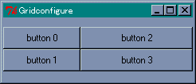 4 つのボタンが横方向に伸びる
今度は、1 列目にも余白が割り当てられますが、-weight オプションの設定が 2 なので 0 列の 2 倍の余白が割り当てられます。つまり、ボタン button 2 と button 3 の方が大きく伸びるわけです。
このままではウィジェットの縦方向が大きくなりません。これに対応するには gridRowconfigure を使います。次のプログラムを追加してください。
$top->gridRowconfigure( 0, -weight => 1 ); $top->gridRowconfigure( 1, -weight => 2 );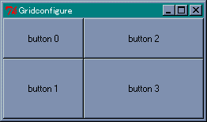 4 つのボタンが縦横方向に伸びる
縦に増えた余白は、0 行と 1 行に 1 対 2 の割合で配分されます。したがって、ウィンドウを大きくするとボタン button 3 がいちばん大きくなります。縦と横の関係で混乱しそうですが、実際にプログラムを動かしてみてください。納得してもらえると思います。
次に、キャンバスウィジェットのリサイズを行ってみましょう。キャンバスもウィジェットなので、pack や grid のオプションを指定することで、ウィンドウのリサイズに対応することができます。次のプログラムを実行してください。
リスト : キャンバスウィジェットのリサイズ（その１） use Tk; # メインウィンドウの設定 $top = MainWindow->new(); # キャンバスの設定 $canvas = $top->Canvas( -bg => 'darkgreen', -width => 200, -height => 200 ); $canvas->create( 'rectangle', 20, 20, 180, 180, -fill => 'red' ); $canvas->pack( -fill => 'both', -expand => 1 ); MainLoop();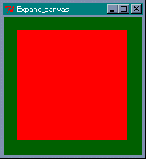 キャンバスウィジェットを配置
キャンバスウィジェットの背景は darkgreen で、その上には赤い四角形が描かれています。ご覧のように、マウスでウィンドウの大きさを変えると、キャンバスウィジェットの大きさは変わりますが、図形の大きさは変わりません。
図形は pack で配置されているわけではないので、Packer はキャンバスウィジェットを引き伸ばすことはできても、その中の図形を操作することはできないのです。図形はユーザーが定義したものですから、Packer が関知しないのは当然のことですね。したがって、ウィンドウのリサイズに対応するには、ユーザー側で図形を再描画する処理をプログラムする必要があるのです。
図形を再描画するには、ウィンドウがリサイズされたときに発生するイベント Configure を使います。このイベントをバインドして、ウィンドウの大きさが変わったら図形を再描画します。バインドはメインウィンドウに対して設定します。
$top->bind( "<Configure>", \&change_size );
キャンバスウィジェットは -fill と -expand を設定して pack されているので、ウィンドウの大きさが変わると、キャンバスの大きさも変わります。このときに図形の大きさを変える関数 change_size を実行すればいいわけです。
キャンバスウィジェットの大きさですが、これは cget メソッドでは求めることができません。実際、ウィンドウがリサイズされキャンバスウィジェットが引き伸ばされても、最初に設定されたオプションの値そのままになっています。キャンバスウィジェットの大きさを求めるには、ウィジェットの情報を取得するメソッド width と height を使います。
また、ウィンドウが小さくなると図形が見えなくなるので、ウィンドウの大きさを制限します。これはメソッド minsize と maxsizeで設定することができます。幅と高さはピクセル単位で指定します。
プログラムは次のようになります。
リスト : キャンバスウィジェットのリサイズ（その２）
use Tk;
# 図形の大きさを変更
sub change_size {
my $w = $canvas->width;
my $h = $canvas->height;
$canvas->coords( $id, 20, 20, $w - 20, $h - 20 );
}
# メインウィンドウの設定
$top = MainWindow->new();
$top->minsize( 100, 100 );
$top->maxsize( 400, 400 );
# キャンバスの設定
$canvas = $top->Canvas( -bg => 'darkgreen', -width => 200, -height => 200 );
$canvas->pack( -fill => 'both', -expand => 1 );
$id = $canvas->create( 'rectangle', 20, 20, 180, 180, -fill => 'red' );
# バインドの設定
$top->bind( "<Configure>", \&change_size );
MainLoop();
関数 change_size の処理は簡単です。メソッド width と height でキャンバスの大きさを求めたら、coords メソッドで図形の位置を変更するだけです。とても簡単ですね。たったこれだけの処理で、ウィンドウの大きさに合わせて図形の大きさを変更することができます。
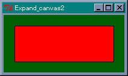 ウィンドウを縮小フレームは、複数のウィジェットをひとまとめにする入れ物として使われるウィジェットです。単純なウィジェットですが、ジオメトリマネージャと組み合わせることで、複雑なウィジェットの配置にも簡単に対応することができます。
フレームウィジェットは Frame メソッドで生成します。オプションを指定する必要はほとんどありませんが、アプリケーションによっては形状や背景色を指定するといいでしょう。形状は -relief オプションで指定します。flat (平坦)、raised (出っぱり)、sunken (引っ込み)、groove (溝)、ridge (土手) の 5 種類が用意されています。デフォルトは flat です。次のプログラムを実行してください。
リスト : フレームの表示
use Tk;
$top = MainWindow->new();
foreach $r ('raised', 'sunken', 'flat', 'groove', 'ridge') {
$top->Frame( -width => 60, -height => 40, -relief => $r,
-borderwidth => 4, -bg => 'gray' )
->pack( -padx => 5, -pady => 5, -side=> 'left' );
}
MainLoop();
これは 5 つの形状をすべて表示するプログラムです。-borderwidth は枠の幅を指定します。たとえば、レリーフが raised の場合、枠の上辺と左辺を背景よりも明るい色で、枠の下辺と右辺を暗い色で描くことにより、フレームがウィンドウから出っ張っているように見えます。-borderwidth の値を増やすと、この幅が増えるのでフレームはより出っ張って見えるようになります。実際に値を変えて試してみてください。
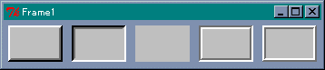 フレームの形状フレームにウィジェットを配置する方法はいままでと同じですが、もうひとつ、ジオメトリマネージャの -in オプションを使う方法があります。簡単な例題として、ボタンを 3 つ横に並べて、その下にボタンを縦に 3 つ配置するプログラムを作ってみます。
これは Grid マネージャを使ってもプログラムできますが、ふたつのフレームと Pack マネージャを用いることで簡単に実現できます。横に並べるボタンをフレーム $f0 に配置し、縦に並べるボタンをフレーム $f1 に配置します。次のリストを見てください。
リスト : フレームにボタンを配置する use Tk; $top = MainWindow->new(); # フレームの生成 $f0 = $top->Frame(); $f1 = $top->Frame(); # フレーム $f0 にボタンを配置 $f0->Button( -text => "button 00" )->pack( -side => 'left' ); $f0->Button( -text => "button 01" )->pack( -side => 'left' ); $f0->Button( -text => "button 02" )->pack( -side => 'left' ); # フレーム $f1 にボタンを配置 $top->Button( -text => "button 10" )->pack( -in => $f1, -fill => 'both' ); $top->Button( -text => "button 20" )->pack( -in => $f1, -fill => 'both' ); $top->Button( -text => "button 30" )->pack( -in => $f1, -fill => 'both' ); # フレームを配置する $f0->pack(); $f1->pack( -fill => 'both' ); MainLoop();
フレーム $f0 にはいままでと同じ方法でボタンを配置します。このボタンを pack するとフレーム $f0 に配置されます。この段階ではフレームにボタンを詰め込んだだけなので、まだウィンドウには表示されません。メインウィンドウにフレームを配置しないとボタンは表示されないのです。
フレーム $f1 には、-in オプションを使ってボタンを配置します。この場合、ボタンはメインウィンドウ $top から生成しますが、pack の -in オプションによりフレーム $f1 に配置されます。-in オプションは grid でも使用することができます。
最後にフレーム $f0 と $f1 を pack で配置します。これでボタンが表示されます。それから、縦に配置したボタンを引き伸ばすため、-fill オプションを指定します。この場合、ボタンをフレームに配置するときと、フレームをウィンドウに配置するときの 2 か所で指定する必要があります。片方だけではボタンを引き伸ばすことはできません。ご注意くださいませ。
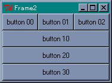 フレームを使ってボタンを配置するモグラたたき でも簡単に説明しましたが、ウィジェットには重なり順があり、Tk の場合はあとから作成したウィジェットが上になります。フレームウィジェットとそこに配置するウィジェットの重なり順を変更することで、ウィジェットをフレームの下に隠すことができます。つまり、ウィジェットを消去したことと同じ効果が得られるわけです。ウィジェットの重なり順はメソッド lower と raise で変更することができます。
$widget->lower( $widget1 ); $widget->raise( $widget1 );
lower メソッドは $widget の重なり順を $widget1 の下に変更します。引数 $widget1 を省略すると、$widget の重なり順はいちばん下になります。逆に、raise メソッドは $widget の重なり順を $widget1 の上に変更します。引数 $widget1 を省略すると、$widget の重なり順はいちばん上になります。
ちなみに、ウィジェットを消去するメソッドに destroy がありますが、これは本当にウィジェットを削除します。したがって、もしも同じウィジェットが必要になれば、再度ウィジェットを生成しなければいけません。lower メソッドでウィジェットをフレームの下に隠しておけば、必要になったときに raise メソッドで表に出すだけで済みます。
簡単な例を示しましょう。次のプログラムを見てください。
リスト : フレームの下にボタンを隠す
use Tk;
@button = ();
# ボタンを隠す
sub hide {
my $i = shift;
$button[$i]->lower();
}
# メインウィンドウ
$top = MainWindow->new();
# フレーム
$frame = $top->Frame();
# ボタン
$top->Button( -text => 'Show', -command => sub { $frame->lower(); } )
->pack( -in => $frame, -fill => 'x' );
foreach $i (1 .. 4) {
$button[$i] = $top->Button( -text => "button $i", -command => [\&hide, $i] )
->pack( -in => $frame, -fill => 'x' );
}
$frame->pack ( -fill => 'x' );
MainLoop();
5 つのボタンをフレームに配置します。これらのボタンは pack の -in オプションでフレームに配置しますが、ボタンをフレームから生成すると、フレームとボタンの重なり順を変更できなくなります。ご注意くださいませ。
button 1 - 4 を押すと、そのボタンがフレームの下に隠れます。ボタンを隠す処理は関数 hide で行います。ボタンウィジェットのオブジェクトは配列 @button に格納されているので、押したのボタンの重なり順を lower メソッドでいちばん下にすれば、フレームの下に隠すことができます。
いちばん上のボタン Show を押すと、隠れたボタンを表に出します。このとき、ボタンを raise メソッドで表に出してもいいのですが、フレームウィジェットの重なり順をいちばん下に変更した方が簡単です。これですべてのボタンが表示されます。
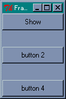 button 1 と 3 を押した状態